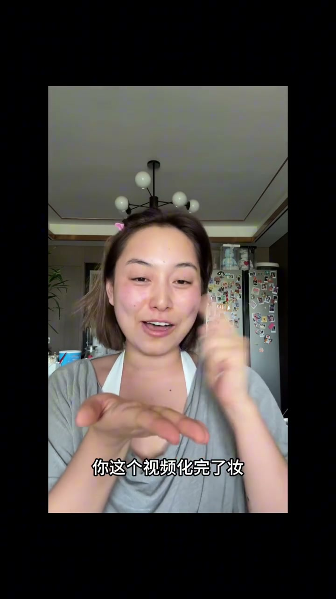
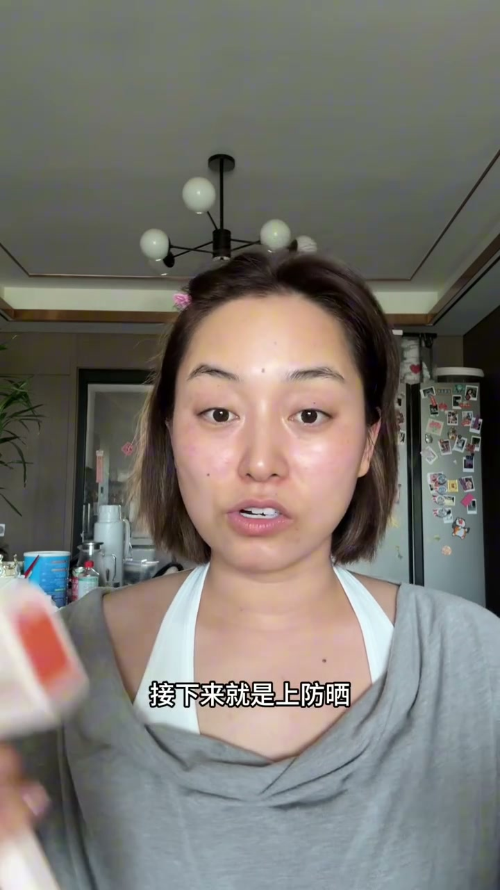
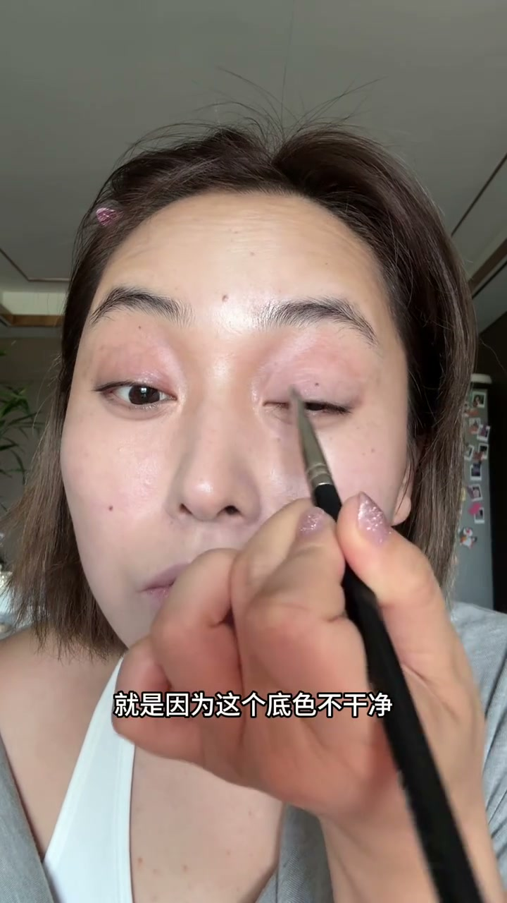
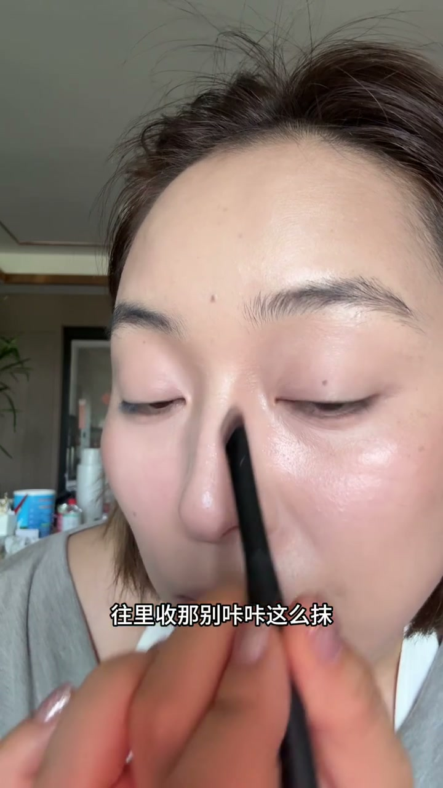
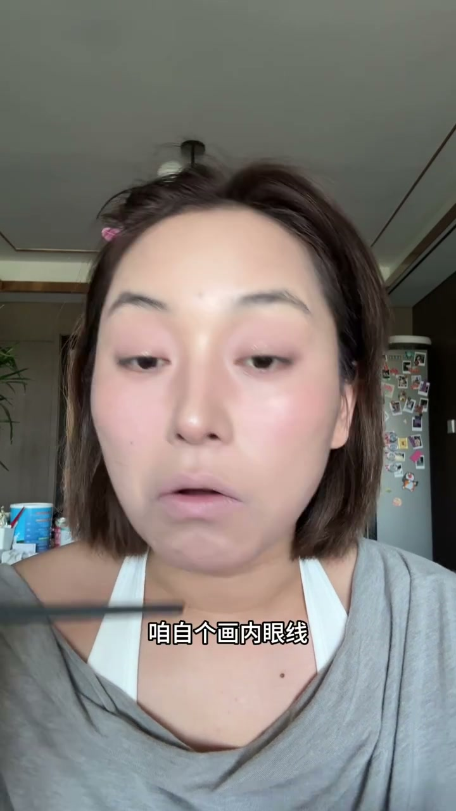
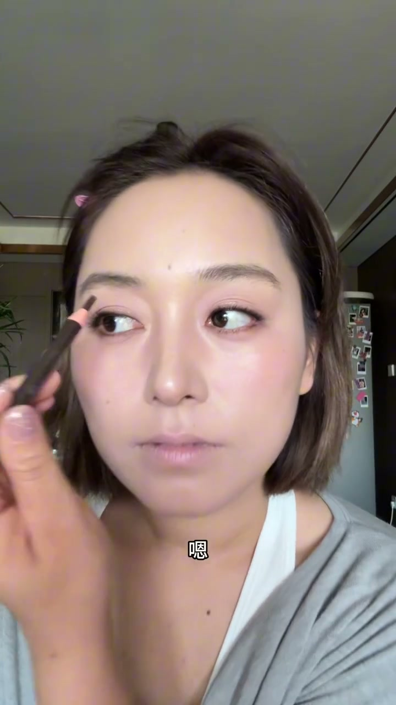
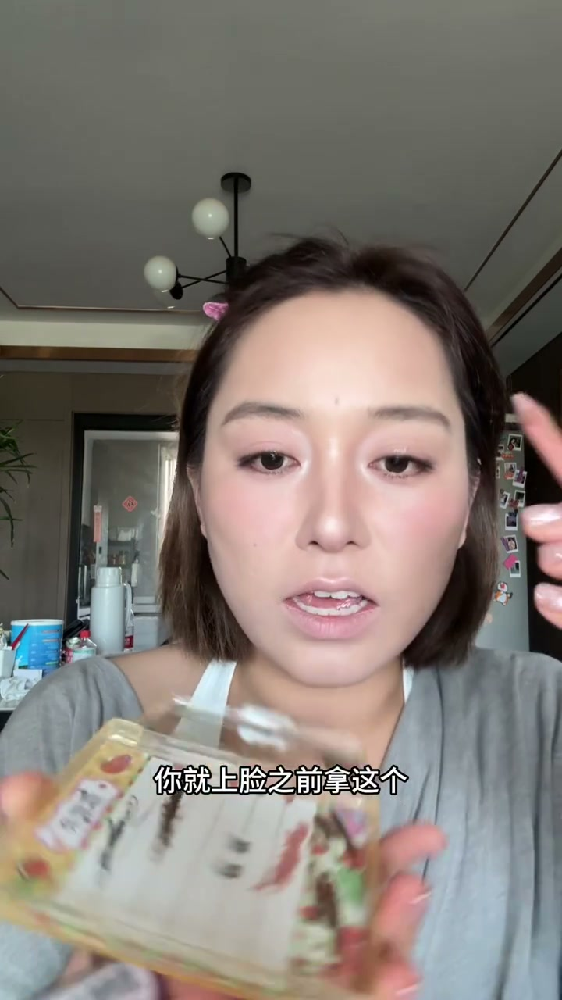

01
中文
如果咱想出去学化妆课的话，我觉得可以先不用去。
EN
If you're thinking about taking a makeup class, I'd say you can hold off for now.
表达提示take a makeup class（上化妆课）；hold off（先缓一缓，比 wait 更口语）

Scene English · 化妆教程
Makeup Prep Diary: Watch This Before Booking an In-Person Makeup Class
🎧 语音讲解
Opening: Watch the Free Video Before You Enroll
情境博主劝姐妹们在花钱报线下化妆课之前，先用这条免费视频自己试试。语域：教程口播，东北口语（鼓球＝琢磨）。
如果咱想出去学化妆课的话，我觉得可以先不用去。
If you're thinking about taking a makeup class, I'd say you can hold off for now.
表达提示take a makeup class（上化妆课）；hold off（先缓一缓，比 wait 更口语）
这条视频想讲清楚的，是化妆的基本原理和所有步骤的顺序。
What this video wants to make clear are the basic principles of makeup and the order of every step.
表达提示make clear（讲清楚）；the order of steps（步骤顺序）
鼓球完发现结果满意，就不用去上课了；要是还差点事，再花钱上化妆课也不迟。
Try it first — if you're happy with the result, skip the class; if it's still lacking, you can always pay for a class later.
表达提示鼓球＝东北口语「琢磨/试试」，译成 try it first；it's still lacking（还差点事）
别急着报名 → hold off for now / there's no rush to sign up
试完结果满意 → happy with the result / satisfied with how it turns out
还差点事 → it's still lacking / it falls short / there's room to improve

Prep: Facial Hair, Cleansing & Exfoliating
情境化妆第一步是清理面部毛发和油脂灰尘死皮，消除粉底和脸之间的「隔层」。语域：教程口播，步骤讲解。
首先化妆的第一步，就是把脸上的毛发清理一下。
The very first step of makeup is clearing the facial hair.
表达提示clear the facial hair（清理毛发），比 remove hair 更口语
尤其小胡子这块，隔着毛上粉底会发青。
Especially the upper-lip area — if you apply foundation over the hair, that patch turns bluish.
表达提示upper-lip area（小胡子区域）；turns bluish（发青）
顺着毛茬刮，别逆向刮伤自己。
Shave along the grain — don't go against it and cut yourself.
表达提示along the grain（顺着毛茬）；against the grain（逆向）
拿化妆棉蘸化妆水，顺着皮肤纹路把油脂灰尘全擦下去。
Take a cotton pad dipped in toner and wipe along the skin's texture to sweep away oil and dust.
表达提示cotton pad dipped in toner（化妆棉蘸化妆水）；sweep away（擦下去）
鼻翼两边死皮硬，就湿敷泡软再轻轻带下来。
If the dead skin around your nostrils is tough, press on a wet pad to soften it, then gently sweep it off.
表达提示dead skin（死皮）；soften（泡软）；sweep it off（带下来）
顺着毛茬 → along the grain / with the direction the hair grows
用化妆棉擦 → sweep it away with a cotton pad / wipe it off with toner
把死皮泡软 → soften it with a wet compress / let it soak until soft
Hydrate & Lock In: Two Separate Steps
情境喷雾、水、精华负责补水，面霜、乳液负责锁水。只补水不锁水，水一蒸发还是干、起皮。语域：教程口播，原理讲解。
水、喷雾、精华的作用都是补水，面霜或乳液的作用就是锁水。
Water, mist, and essence hydrate; cream and lotion lock the moisture in.
表达提示hydrate（补水）；lock in moisture（锁水）
只补水不锁水，水一蒸发，脸还是干、起皮。
If you only hydrate but don't lock it in, the water evaporates and your face ends up dry and flaky again.
表达提示evaporate（蒸发）；dry and flaky（干、起皮）
等完全吸收了，再来下一遍。
Wait until it's fully absorbed before applying the next layer.
表达提示fully absorbed（完全吸收）；next layer（下一遍）
补水 → hydrate / replenish moisture / add moisture to the skin
锁水 → lock in the moisture / seal it in / trap the moisture
起皮 → dry and flaky / peeling / getting scaly
Sunscreen: Press, Don't Rub — No Pilling
情境夏天防晒必不可少。选乳液压的防晒，用粉扑往脸上「印」，手法上最大程度避免手指搓脸，就不容易搓泥。语域：教程口播，手法教学。
夏天防晒必不可少。
Sunscreen is non-negotiable in summer.
表达提示non-negotiable（必不可少），比 must-have 更有力度
上防晒不用怕搓泥，找乳液压的防晒，拿粉扑往脸上「印」。
Don't worry about pilling — pick a lotion-textured sunscreen and press it on with a puff.
表达提示pilling（搓泥）；lotion-textured（乳液压）；press on（印）
你不搓，它上哪搓泥去。
No rubbing, no pilling — simple as that.
表达提示rubbing（搓）；no pilling（不搓泥）
防晒上完别急着叠东西，等它成膜之后再上。
After sunscreen, don't rush to layer anything on; wait for it to set into a film first.
表达提示set into a film（成膜）；layer on（叠加）
搓泥 → pilling / it rolls off / it balls up
用印不用搓 → press it on instead of rubbing / dab, don't rub
等成膜 → let it set into a film / wait for it to dry down

Pre-Base Concealer: Match the Color
情境底妆前遮瑕按瑕疵颜色处理：发青发黄用紫色提亮，发红用绿色遮瑕液，黑眼圈用三文鱼色少量多次。语域：教程口播，校色原理。
发青的地方用紫色提亮，发黄也用紫色点，发红用绿色遮瑕液。
Bluish areas get purple to brighten, yellowish areas get purple dots too, and red areas get a green corrector.
表达提示bluish/yellowish/reddish（发青/发黄/发红）；green corrector（绿色遮瑕液）
手法是刷子铺开 + 粉扑压实。
The technique is brush to spread, then puff to press.
表达提示brush to spread（刷子铺开）；puff to press（粉扑压实）
黑眼圈别想着遮得完全看不出，正面看基本看不见就够了。
Don't expect to hide dark circles completely — it's enough if they're basically invisible from the front.
表达提示dark circles（黑眼圈）；basically invisible（基本看不见）
用三文鱼色，每次蘸一点点，少量多次，基本不会卡粉。
Use a salmon shade — pick up just a tiny bit each time, apply a little often, and it won't cake.
表达提示salmon shade（三文鱼色）；cake（卡粉）
按颜色校色 → color correct by shade / neutralize the tone
少量多次 → apply a little, often / build it up in thin layers
卡粉 → cake / get cakey / look patchy
Foundation & Setting Spray: Start at the Center
情境遮瑕后上一层定妆喷雾像双面胶，把遮瑕和粉底粘在一起。粉底第一笔落面中，由内向外过渡到外轮廓。语域：教程口播，手法讲解。
遮瑕完后来一层定妆喷雾，像双面胶一样，把遮瑕和粉底液粘住。
After concealing, add a layer of setting spray — like double-sided tape, it sticks the concealer and foundation together.
表达提示setting spray（定妆喷雾）；double-sided tape（双面胶）
粉底液第一笔落在面中，这条线掌握着里脸和外脸的分界线。
The first stroke of foundation lands on the mid-face; that line holds the boundary between your inner and outer face.
表达提示mid-face（面中）；boundary（分界线）
由内向外一点点过渡到外轮廓，外轮廓粉少一点反而更立体。
Blend outward bit by bit toward the outer contour — less foundation there actually looks more sculpted.
表达提示blend outward（向外过渡）；outer contour（外轮廓）；sculpted（立体）
第一笔落面中 → start with the mid-face / begin at the center of the face
由内向外 → blend outward / work from the center out
更立体 → more sculpted / more dimensional / better defined

The Bone-Structure Trio: Highlight, Contour, Blush
情境提亮、修容、腮红三者一组，都是为了塑造脸上的骨相。提亮要比粉底明显白，鼻影要有层次，腮红衔接外圈阴影和里圈提亮。语域：教程口播，原理讲解。
提亮、修容、腮红这三个东西放一起，都是为了塑造脸上的骨相。
Highlight, blush, and contour work as a set — all of them sculpt the face's bone structure.
表达提示highlight/contour/blush（提亮/修容/腮红）；bone structure（骨相）；sculpt（塑造）
提亮一定要比粉底肉眼可见地白很多才行。
Your highlight has to be visibly much whiter than your foundation.
表达提示visibly whiter（肉眼可见地更白）
鼻影要有层次，不是一条均匀的黑，深的地方在鼻根两侧，其他地方都是过渡。
The nose shadow needs layers — not one flat dark stripe. The deepest color sits at the sides of the nose root; everywhere else is a smooth transition.
表达提示nose shadow（鼻影）；nose root（鼻根）；smooth transition（过渡）
外圈修容是黑的、里圈提亮是白的，中间这块空档用腮红衔接起来。
The outer contour is dark, the inner highlight is light, and blush bridges the empty band in between.
表达提示bridges（衔接），动词比 connect 更形象
塑造骨相 → sculpt the bone structure / build up the facial structure / add dimension to the face
鼻影有层次 → layered nose shadow / graduated shading
腮红衔接 → blush bridges the gap / blush ties the two together

Setting Powder & Eye Makeup: Set the Lids, Line the Roots
情境定妆喷雾成膜后上散粉，眼皮一定要定妆，否则眼线晕染快。眼影刷具要选对，眼线用刀锋刷填睫毛根。语域：教程口播，手法讲解。
眼皮上面一定要用小刷子沾粉好好定妆，不然画完眼线晕染得特别快。
Always set your eyelids well with a small brush and powder — otherwise your eyeliner smudges in no time.
表达提示set（定妆）；smudge（晕染）
蓬松的刷子适合大面积铺色，边缘自然；扁刺刷适合小范围加深。
A fluffy brush is great for large-area blending with a soft edge; a flat, firm brush is for small-area deepening.
表达提示fluffy brush（蓬松刷）；blending（铺色）；deepening（加深）
眼线用刀锋刷，笔尖在睫毛根一填，眼睛一下就有神了。
Use an angled brush for liner — fill right into the lash line, and your eyes instantly come alive.
表达提示angled brush（刀锋刷）；lash line（睫毛根）；come alive（有神）
眼皮定妆 → set your eyelids / powder the lids first
晕染 → smudge / smears / blends away
有神 → come alive / look more defined / pop

Lashes & Brows: The Window and the Curtains
情境眼睛是心灵之窗，睫毛是窗帘。睫毛打底从根部往上刷，假睫毛新手推荐免胶款，眉毛颜色跟发色走。语域：教程口播，类比教学。
眼睛是心灵的窗户，睫毛就是心灵的窗帘。
The eyes are the window to the soul, and the lashes are the curtains.
表达提示window to the soul（心灵之窗）
睫毛打底一定要从睫毛根往上刷，从根部撸上去才定型。
Lash primer must be brushed from the root upward — that's what actually sets the curl.
表达提示lash primer（睫毛打底）；from the root upward（从根部往上）
假睫毛新手最推荐免胶款，夹在离睫毛根三分之一处。
For beginners I'd recommend glue-free falsies — clamp them about one-third from your lash root.
表达提示glue-free falsies（免胶款假睫毛）；lash root（睫毛根）
眉毛的颜色跟发色走，先填眉毛底下皮的色。
Match your brow color to your hair color, and fill in the skin beneath the brows first.
表达提示match ... to（跟…走）；fill in（填色）
心灵之窗 → the window to the soul / the eyes as windows
推荐免胶款 → recommend the glue-free kind / go with glue-free / skip the glue
跟发色走 → match your hair color / follow your hair color

Deepening, Highlight Layering & Lipstick Finale
情境化妆是层层渲染，不是一步到位。三种提亮像大圈套小圈再套迷你圈，唇线笔的作用就是嘴唇修容。语域：教程口播，收尾总结。
化妆不是一步到位，而是头一遍来一点、再加深一点，一层层渲染。
Makeup isn't a one-shot deal — you apply a little first, deepen it, and render it layer by layer.
表达提示one-shot（一步到位）；render layer by layer（层层渲染）
三种提亮的关系就像大圈套小圈、再套迷你圈。
The three highlights work like a big circle, a small circle inside it, and a mini circle inside that.
表达提示大圈套小圈 → circles within circles，译成 a small circle inside it
唇线笔的作用就是嘴唇修容，把明显的唇缘分界线模糊掉，有扩唇效果。
A lip liner acts as lip contouring — blur the obvious lip boundary, and it creates a fuller-lip effect.
表达提示lip liner（唇线笔）；blur（模糊）；fuller-lip effect（扩唇效果）
一步到位 → a one-shot deal / all in one go / done in a single pass
层层渲染 → render it layer by layer / build it up gradually / keep layering
扩唇效果 → a fuller-lip effect / makes lips look fuller
想说服朋友别急着花钱报课
跟姐妹解释遮瑕要少量多次
提醒眼皮一定要定妆
描述口红的大圈套小圈叠涂
tough 比 hard 更贴合肤质描述，dead skin 是固定搭配（死皮）。
press ... into 表示「按压进去」，比 on 更自然；on 有「按在表面」的歧义。
说妆容「脏」指修容不干净，用 muddy（脏浊）；very dirty 太笼统且不像化妆语境。
line 是化妆语境「画眼线」的地道动词，draw 偏绘画语境。